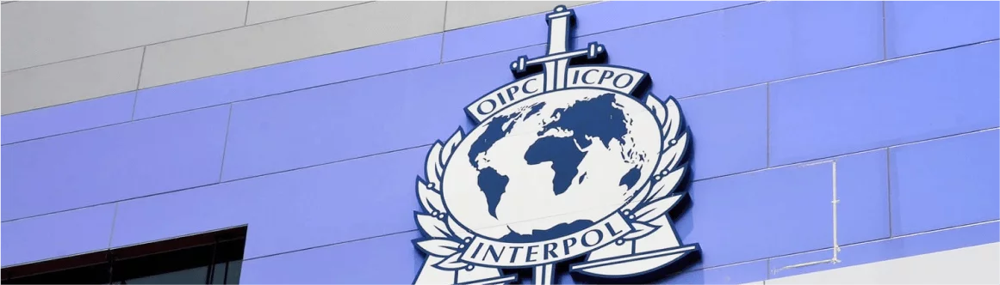

.png)
ИСКЛЮЧЕНИЕ ИЗ СПИСКОВ МЕЖДУНАРОДНОГО РОЗЫСКА ИНТЕРПОЛ
Если российский, белорусский, украинский гражданин кому-то сильно нужен у себя на родине, то можно быть уверенным: его не оставят в покое даже в том случае, если он покинет страну и переберётся за границу. Чаще всего вытащить гражданина обратно пытаются полицейские той страны, откуда он уехал. А наиболее распространённой причиной того, почему его так сильно хотят вытащить обратно, является желание забрать его бизнес, деньги или другую собственность.
Если преследователи достаточно настойчивы, то экстрадиция может длиться очень долго, годами. Ещё одним способом сделать жизнь неугодного гражданина более сложной является внесение его в список Интерпола. По сути, это объявление человека в международный розыск, санкции хватать его где угодно, если его удастся обнаружить.
Можно получить убежище внутри какой-то страны и жить там относительно спокойно, но при попытке пересечь границу или въехать в другую страну риск быть арестованным становится очень велик. Поэтому давайте подробнее поговорим о том, что такое списки Интерпола и как бороться с этой проблемой.

КТО МОЖЕТ ИНИЦИИРОВАТЬ ВНЕСЕНИЕ В СПИСКИ ИНТЕРПОЛА
Исходя из опыта нашей Ассоциации «DocsAbround» , можно сказать о том, что внесение в список Интерпола почти всегда связано с политическим преследованием. Хотя бы потому, что внести кого бы то ни было в этот список может только государство-член Интерпола, например, Россия. А если какое-то государство настаивает на применении санкционных мер такого плана против своего гражданина, то просто глупо отрицать, что это политическое дело.
Если ваши преследователи недостаточно влиятельны, то им никогда не удастся добиться того, чтобы вас внесли в списки Интерпола. Если же это случилось, то, скорее всего, вы имеете врагов на самом верху. Опускать руки не нужно, но нужно настроиться на серьёзную и длительную борьбу, если вы хотите добиться нужного результата и выйти из списков Интерпола.
Важно заметить, что чаще всего внесение в списки Интерпола человека незаконно даже по меркам того государства, которое это внесение инициирует. Однако большинство государств СНГ откровенно не обращают никакого внимания на законность, когда нужно вернуть и засудить человека. Так что придётся сражаться против всей коррумпированной правоохранительной системы. И конечно же, здесь никак нельзя действовать в одиночку. Залогом хорошего результата становится то, с кем вместе вы будете проходить свой путь борьбы. Если вы не знаете, к кому обратиться - то это очень распространённая ситуация. Действительно, мало кто занимается подобными делами, здесь недостаточно только знать законы на высоком уровне, важно ещё уметь сопротивляться тому гигантскому давлению, которое будет оказываться как на самого гражданина, так и на тех юристов, которые возьмутся его защищать.
«DocsAbround» предлагает любые услуги по защите гражданина от противоправного преследования. Только мы предлагаем целый комплекс мер, которые могут помочь в этом случае, начиная с защиты в суде и заканчивая теми мерами, которые будут направлены на личную и имущественную безопасность. Мы сделаем всё для того, чтобы разрешить самые сложные ситуации, помочь с теми делами, за которые большинство адвокатов и юристов просто не возьмутся.
ПОЧЕМУ ИМЕННО «DocsAbround»
У нас есть целый ряд преимуществ, которые приводят к тому, что мы не имеем конкурентов на своём уровне.
— Наши специалисты легко могут общаться на любом языке, который для вас является привычным. Для многих граждан, которые подвергаются преследованию в Европе, сама возможность обсудить свои проблемы со специалистом на русском или украинском языке является уникальной, потому что большинство адвокатов в Европе, естественно, привыкли общаться на английском, французском, немецком языке, а использование переводчика не позволяет добиться того уровня взаимопонимания, который необходим при ведении таких сложных дел.
— Наконец, мы поддерживаем нашего клиента в любой ситуации, даже если по ходу процесса возникают новые проблемы. Само по себе исключение из списка Интерпола - это уже серьёзная проблема, но чаще всего она неизбежно связана с целым рядом других проблем, например с преследованием заёмщика за границей и с угрозами экстрадиции и ареста. Так что если браться распутывать всё это, то здесь не обойтись без комплексного подхода. И это именно то, что мы вам предлагаем.
КАК ДОБИТЬСЯ ИСКЛЮЧЕНИЯ ИЗ СПИСКОВ ИНТЕРПОЛА
Реально ли вообще добиться исключения из таких списков? Подобных прецедентов ничтожно мало. Изначально в списки Интерпола заносили только отъявленных преступников, которых действительно нужно было найти и наказать. Уже позднее некоторые страны стали использовать этот инструмент ещё и в личных целях, то есть в целях расправы со своими политическими врагами. Процедура исключения из списков Интерпола по иной причине, чем поимка и арест нужного гражданина, вообще не разработана. Это очень сильно осложняет такую процедуру.
В то же время, нужно понимать, что исключение из списков - это не самоцель и даже не единственная цель. Чаще всего требуется сразу широкий спектр мер, направленных на то, чтобы сделать жизнь гражданина спокойнее, позволить ему заниматься бизнесом или другим любимым делом без особых волнений. Другими словами, цель здесь не только в том, чтобы добиться исключения из списков, а в том, чтобы даже если человек останется в этих списках, он мог нормально жить, а не существовать в постоянном страхе.
ДЛЯ ЭТОГО МЫ СДЕЛАЕМ СЛЕДУЮЩЕЕ:
— Обеспечим представительство в судах. Подобные дела всегда начинаются с судов, и чтобы как-то изменить ситуацию, придётся выиграть немало судебных заседаний. Кроме того, часто применяется ещё и такой механизм, как травля через суды, то есть возбуждение огромного числа дел, чтобы преследуемый постоянно этим занимался и этим жил. Первое что мы сделаем - это снимем с вас этот груз и возьмём его на себя.
— Следующий шаг - обжалование судебных решений. Многие решения судов, особенно в странах СНГ, совершенно неправомерны, однако доказать это не так просто. Придётся проходить такую процедуру, как экзекватура, то есть тестирование принятых судебных решений на их соответствие международным правовым стандартам.
Чтобы добиться исключения из списков Интерпола, тоже приходится идти через суд. В частности, Ассоциация «ARGA» готова обжаловать решение о занесении гражданина в такой список в Европейском Суде по правам человека. Данный судебный орган занимается именно тем, чтобы права человека не ущемлялись, а ведь преследование с помощью экстрадиции, да ещё и Интерпола - это одно из самых грубых нарушений, особенно если вина человека в глазах Европейского суда вообще не доказана.
ТАКИМ ОБРАЗОМ, НЕ СТОИТ СДАВАТЬСЯ, НУЖНО БОРОТЬСЯ
«DocsAbround» предоставит любую помощь, которая вам понадобится. В первую очередь ту помощь, которая позволит улучшить вашу жизнь с практической стороны: избавить вас от судебных заседаний, опасности ареста и замораживания денег, звонков с угрозами, неправомерных решений судов и так далее. Обращение в «DocsAbround» позволит решить многие проблемы, которые на первый взгляд кажутся безысходными.